ggnetwork: Network geometries for ggplot2
François Briatte
2024-02-14
Source:vignettes/ggnetwork.Rmd
ggnetwork.RmdThe
ggnetworkpackage provides a way to build network plots withggplot2.
Install the stable version from CRAN:
install.packages("ggnetwork")Or use remotes to install the latest version of the package from GitHub:
remotes::install_github("briatte/ggnetwork")The package is meant to be used with ggplot2 version 2.0.0 or above, so make sure that you update your version of ggplot2 from CRAN before using ggnetwork:
install.packages("ggplot2")
library(ggplot2)ggnetwork further requires the network and sna packages for network manipulation, and will also install the ggrepel package for repulsive label drawing.
The ggnetwork package is very much related to the development of geom_net by Samantha C. Tyner and Heike Hoffmann. It also shares some similarity to the ggnet and ggnet2 functions, which are part of the GGally package by Barret Schloerke and others. Each of these projects are extensions to Hadley Wickham’s implementation of Leland Wilkinson’s “grammar of graphics” in ggplot2.
Minimal example
Let’s define a small random graph to illustrate each component of ggnetwork:
Let’s now add categorical and continuous attributes for both edges and vertices. We’ll start with nodes, adding a categorical vertex attribute called "family", which is set to either "a", "b" or "c", and a continuous vertex attribute called "importance", which is set to either 1, 2 or 3.
n %v% "family" <- sample(letters[1:3], 10, replace = TRUE)
n %v% "importance" <- sample(1:3, 10, replace = TRUE)We now add a categorical edge attribute called "type", which is set to either "x", "y" or "z", and a continuous vertex attribute called "day", which is set to either 1, 2 or 3.
e <- network.edgecount(n)
set.edge.attribute(n, "type", sample(letters[24:26], e, replace = TRUE))
set.edge.attribute(n, "day", sample(1:3, e, replace = TRUE))Last, note that ggnetwork contains a “blank” plot theme that will avoid plotting axes on the sides of the network. We will use that theme in most of the plots:
theme_blank## function (base_size = 12, base_family = "", ...)
## {
## ggplot2::theme_bw(base_size = base_size, base_family = base_family) +
## ggplot2::theme(axis.text = ggplot2::element_blank(),
## axis.ticks = ggplot2::element_blank(), axis.title = ggplot2::element_blank(),
## legend.key = ggplot2::element_blank(), panel.background = ggplot2::element_rect(fill = "white",
## colour = NA), panel.border = ggplot2::element_blank(),
## panel.grid = ggplot2::element_blank(), ...)
## }
## <bytecode: 0x7fabe76f8308>
## <environment: namespace:ggnetwork>Main building blocks
ggnetwork
The ggnetwork package is organised around a ‘workhorse’ function of the same name, which will ‘flatten’ the network object to a data frame that contains the edge list of the network, along with the edge attributes and the vertex attributes of the sender nodes.
The network object referred to above might be an object of class network, or any data structure that can be coerced to it, such as an edge list, an adjacency matrix or an incidence matrix. If the intergraph package is installed, then objects of class igraph can also be used with the ggnetwork package.
The data frame returned by ggnetwork also contains the coordinates needed for node placement as columns "x", "y", "xend" and "yend", which as a consequence are “reserved” names in the context of ggnetwork. If these names show up in the edge or the vertex attributes, the function will simply fail to work.
The default node placement algorithm used by ggnetwork to produce these coordinates is the Fruchterman-Reingold force-directed layout algorithm. All of the placement algorithms implemented in the sna package are available through ggnetwork, which also accepts additional layout parameters:
ggnetwork(n, layout = "fruchtermanreingold", cell.jitter = 0.75)
ggnetwork(n, layout = "target", niter = 100)The layout argument will also accept user-submitted coordinates as a two-column matrix with as many rows as the number of nodes in the network.
The top of the data frame produced by ggnetwork contains self-loops to force every node to be included in the plot. This explains why the rows shown below have the same values in "x" and "xend" (and in "y" and "yend"), and only missing values in the columns corresponding to the edge attributes:
## x y family importance vertex.names xend yend day
## 1 0.0000000 0.3331648 c 2 9 0.1261398 0.77341507 2
## 2 0.0000000 0.3331648 c 2 9 0.2702707 0.00000000 2
## 4 0.2702707 0.0000000 c 1 7 0.6780990 0.03745502 2
## 5 0.2702707 0.0000000 c 1 7 0.4835011 0.10918138 1
## 6 0.4835011 0.1091814 a 2 5 0.6780990 0.03745502 1
## 7 0.5126372 0.8159317 b 2 10 0.7196762 1.00000000 3
## type
## 1 z
## 2 x
## 4 y
## 5 z
## 6 x
## 7 zThe next rows of the data frame contain the actual edges:
## x y family importance vertex.names xend yend
## 51 0.232733755 0.6907997 a 2 5 0.232733755 0.6907997
## 6 0.614866711 0.5182524 a 3 6 0.614866711 0.5182524
## 7 0.000000000 0.5887504 c 1 7 0.000000000 0.5887504
## 81 0.990842008 0.6303231 c 1 8 0.990842008 0.6303231
## 91 0.006826004 0.1580642 c 2 9 0.006826004 0.1580642
## 101 0.744844980 0.2098808 b 2 10 0.744844980 0.2098808
## day type
## 51 NA <NA>
## 6 NA <NA>
## 7 NA <NA>
## 81 NA <NA>
## 91 NA <NA>
## 101 NA <NA>The data frame returned by ggnetwork has (N + E) rows, where N is the number of nodes of the network, and E its number of edges. This data format is very likely to include duplicate information about the nodes, which is unavoidable.
Note that ggnetwork does not include any safety mechanism against duplicate column names. As a consequence, if there is both a vertex attribute called "na" and an edge attribute called "na", as in the example above, then the vertex attribute will be renamed "na.x" and the edge attribute will be renamed "na.y".
fortify.network and fortify.igraph
The ‘flattening’ process described above is implemented by ggnetwork as fortify methods that are recognised by ggplot2. As a result, ggplot2 will understand the following syntax as long as n is an object of class network or of class igraph:
ggplot(n)However, if the object n is a matrix or an edge list to be coerced to a network object, you are required to use the ggnetwork function to pass the object to ggplot2:
geom_edges
Let’s now draw the network edges using geom_edges, which is just a lightly hacked version of geom_segment. In the example below, we map the type edge attribute to the linetype of the network edges:
ggplot(n, aes(x = x, y = y, xend = xend, yend = yend)) +
geom_edges(aes(linetype = type), color = "grey50") +
theme_blank()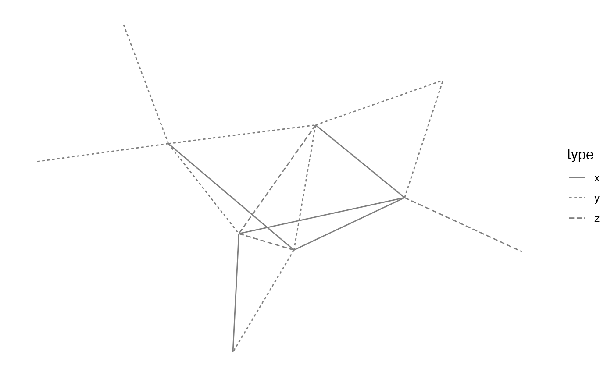
The other aesthetics that we mapped are the basic coordinates of the network plot. These might also be set as part of the call to geom_segment, but setting them at the root of the plot avoids having to repeat them in additional geoms.
Note that geom_edges can also produce curved edges by setting its curvature argument to any value above 0 (the default):
ggplot(n, aes(x = x, y = y, xend = xend, yend = yend)) +
geom_edges(aes(linetype = type), color = "grey50", curvature = 0.1) +
theme_blank()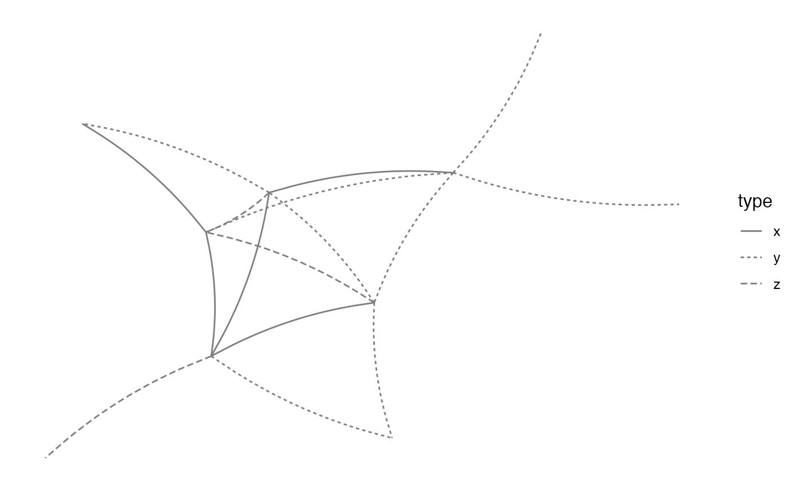
geom_nodes
Let’s now draw the nodes using geom_nodes, which is just a lightly hacked version of geom_point. In the example below, we map the family vertex attribute to the color of the nodes, and make the size of these nodes proportional to the importance vertx attribute:
ggplot(n, aes(x = x, y = y, xend = xend, yend = yend)) +
geom_edges(aes(linetype = type), color = "grey50") +
geom_nodes(aes(color = family, size = importance)) +
theme_blank()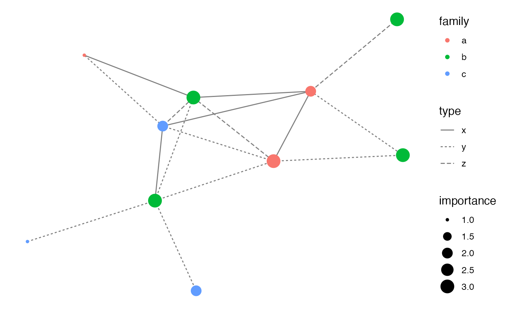
Because ggplot2 follows Wilkinson’s grammar of graphics, it accepts only one color scale. In the example above, that scale is mapped to a vertex attribute, but it could have also been mapped to an edge attribute. Mapping a color to both a vertex attribute and an edge attribute will create a single color scale that incorrectly merges both attributes into one:
ggplot(n, aes(x = x, y = y, xend = xend, yend = yend)) +
geom_edges(aes(color = type)) +
geom_nodes(aes(color = family)) +
theme_blank()This is a limitation of ggnetwork that would require violating some fundamental aspects of the grammar of graphics to be circumvented.
More building blocks
geom_nodetext
Let’s now add node labels. These are simply plotted over the nodes by the nodetext geom, which works exactly like geom_text. In the example below, we map the vertex.names attribute (which contains numbers 1 to 10) to uppercase letters:
ggplot(n, aes(x = x, y = y, xend = xend, yend = yend)) +
geom_edges(color = "black") +
geom_nodes(color = "black", size = 8) +
geom_nodetext(aes(color = family, label = LETTERS[ vertex.names ]),
fontface = "bold") +
theme_blank()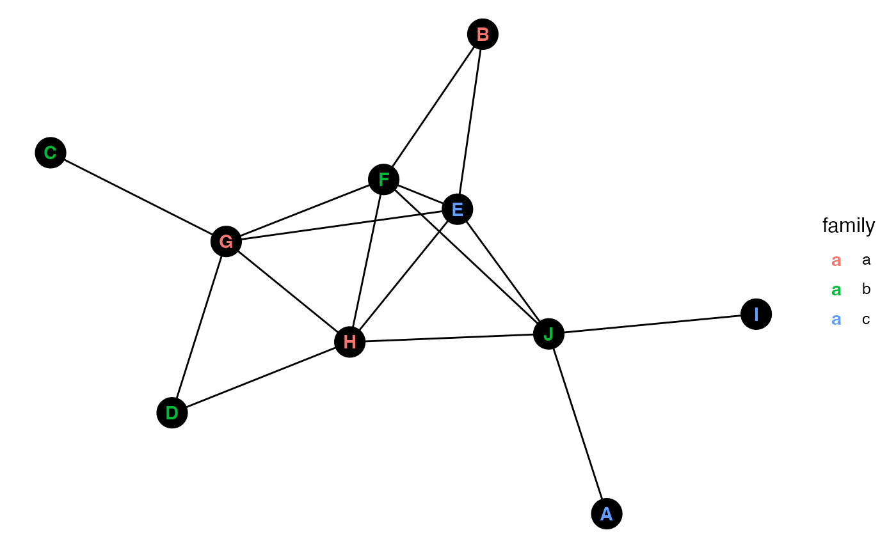
geom_nodelabel
If you prefer to use the geom_label geom recently introduced in ggplot2, ggnetwork also supports these through the nodelabel geom:
ggplot(n, aes(x = x, y = y, xend = xend, yend = yend)) +
geom_edges(color = "black") +
geom_nodelabel(aes(color = family, label = LETTERS[ vertex.names ]),
fontface = "bold") +
theme_blank()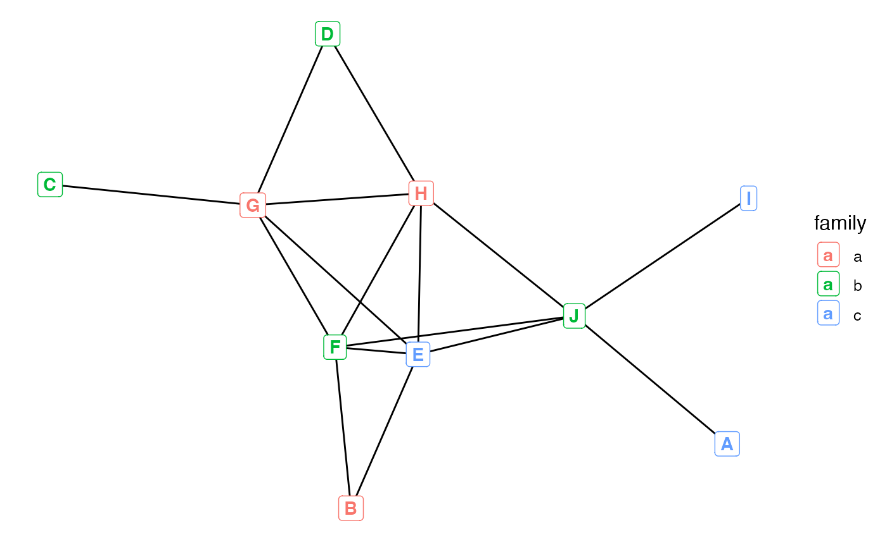
geom_nodetext_repel and geom_nodelabel_repel
ggnetwork supports the repulsive label functions introduced by the ggrepel package, which allows to label nodes with non-overlapping annotations. Simply add _repel to either geom_nodetext or geom_nodelabel to use that functionality:
ggplot(n, aes(x = x, y = y, xend = xend, yend = yend)) +
geom_edges(color = "black") +
geom_nodelabel_repel(aes(color = family, label = LETTERS[ vertex.names ]),
fontface = "bold", box.padding = unit(1, "lines")) +
geom_nodes(color = "black", size = 8) +
theme_blank()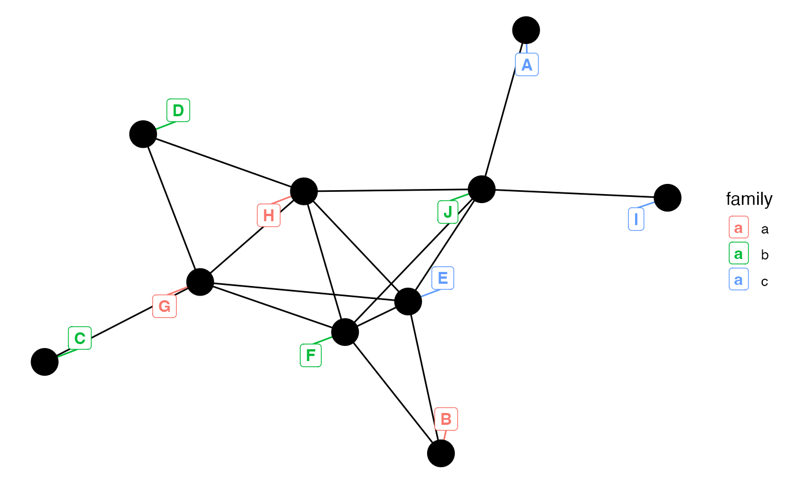
geom_edgetext and geom_edgelabel
Let’s now add edge labels. These are plotted at mid-distance of the nodes that the edges connect by the edgetext geom, which works exactly like geom_label, except that its default arguments do not draw a border around the labels. Here’s an example where we map the day edge attribute to edge labels:
ggplot(n, aes(x = x, y = y, xend = xend, yend = yend)) +
geom_edges(aes(linetype = type), color = "grey75") +
geom_nodes(color = "gold", size = 8) +
geom_nodetext(aes(label = LETTERS[ vertex.names ])) +
geom_edgetext(aes(label = day), color = "white", fill = "grey25") +
theme_minimal() +
theme(axis.text = element_blank(),
axis.title = element_blank(),
panel.background = element_rect(fill = "grey25"),
panel.grid = element_blank())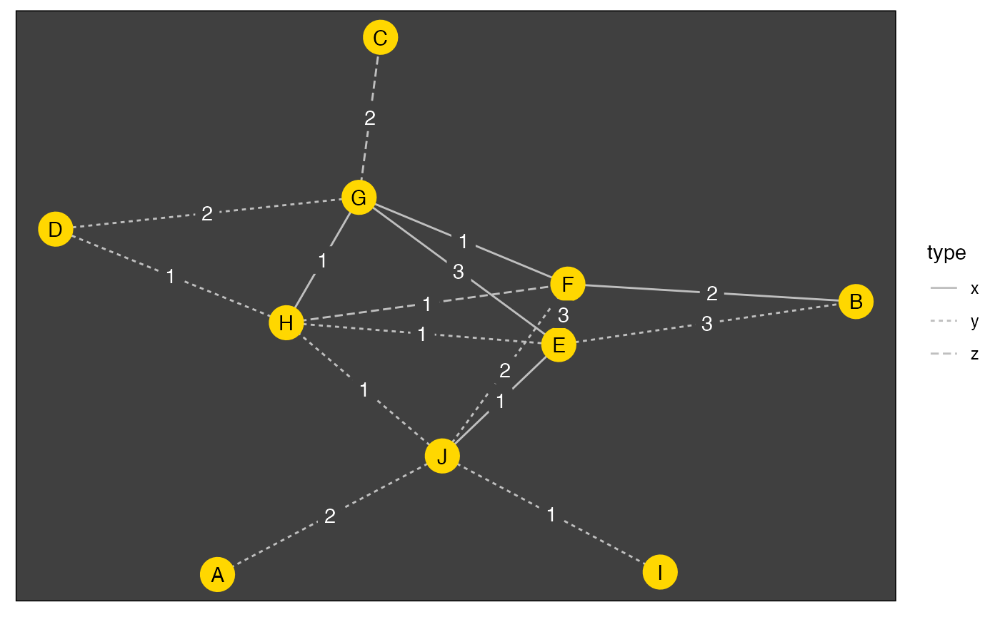
The edgelabel geom is just an alias of the edgetext geom. Note that these geoms are unlikely to produce adequate results if the edges produced by geom_edges are curved.
geom_edgetext_repel and geom_edgelabel_repel
As you would do with nodes, simply add _repel to either geom_edgetext or geom_edgelabel to draw repulsive edge labels:
ggplot(n, aes(x = x, y = y, xend = xend, yend = yend)) +
geom_edges(aes(linetype = type), color = "grey75") +
geom_nodes(color = "gold", size = 8) +
geom_nodetext(aes(label = LETTERS[ vertex.names ])) +
geom_edgetext_repel(aes(label = day), color = "white", fill = "grey25",
box.padding = unit(1, "lines")) +
theme_minimal() +
theme(axis.text = element_blank(),
axis.title = element_blank(),
panel.background = element_rect(fill = "grey25"),
panel.grid = element_blank())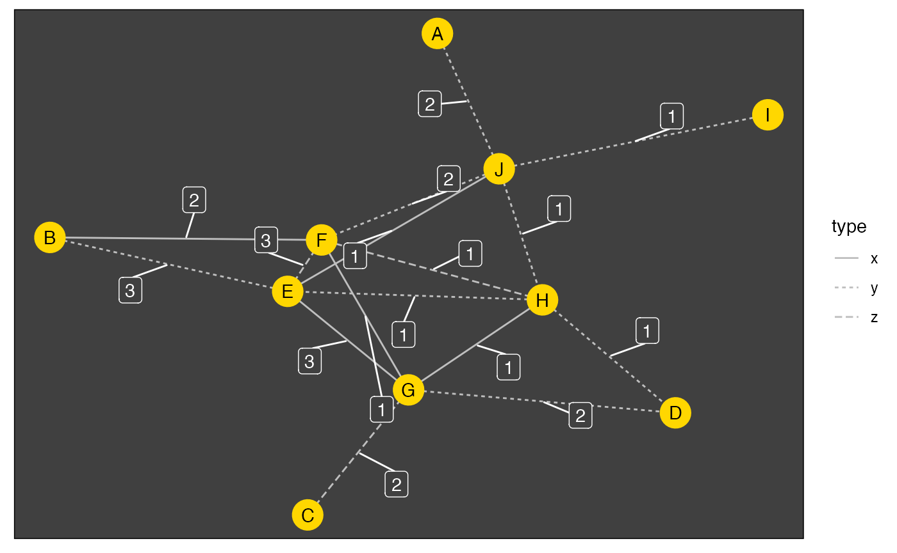
More plotting parameters
This section presents some rather experimental features of ggnetwork.
Edge arrows
ggnetwork uses code by Heike Hoffmann to better show arrows in directed graphs. To illustrate this, we will need a directed graph example, so let’s use the first of the seven emon networks bundled in the network package:
data(emon)
emon[[1]]## Network attributes:
## vertices = 14
## directed = TRUE
## hyper = FALSE
## loops = FALSE
## multiple = FALSE
## total edges= 83
## missing edges= 0
## non-missing edges= 83
##
## Vertex attribute names:
## Command.Rank.Score Decision.Rank.Score Formalization Location Paid.Staff Sponsorship vertex.names Volunteer.Staff
##
## Edge attribute names:
## FrequencyIf this network is passed to ggnetwork without any further plotting parameter, the result will feature “shortened” edges that do not reach their receiver nodes:
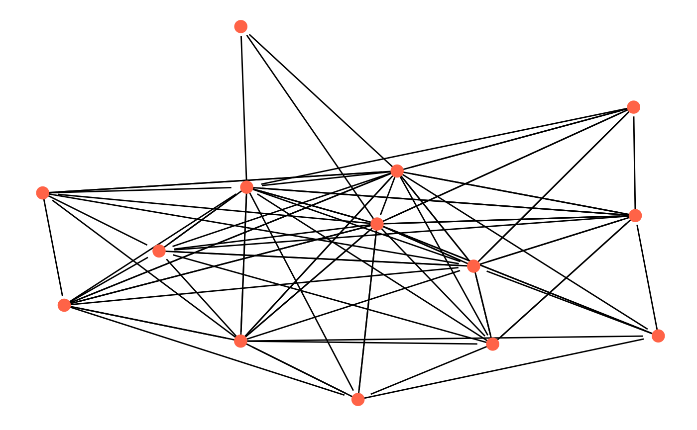
This is because directed networks are expected to be plotted with edge arrows indicating the directedness of each edge. Adding edge arrows with geom_edges works through the same call to the arrow function that is supported by geom_segment:
ggplot(emon[[1]], aes(x = x, y = y, xend = xend, yend = yend)) +
geom_edges(arrow = arrow(length = unit(6, "pt"), type = "closed")) +
geom_nodes(color = "tomato", size = 4) +
theme_blank()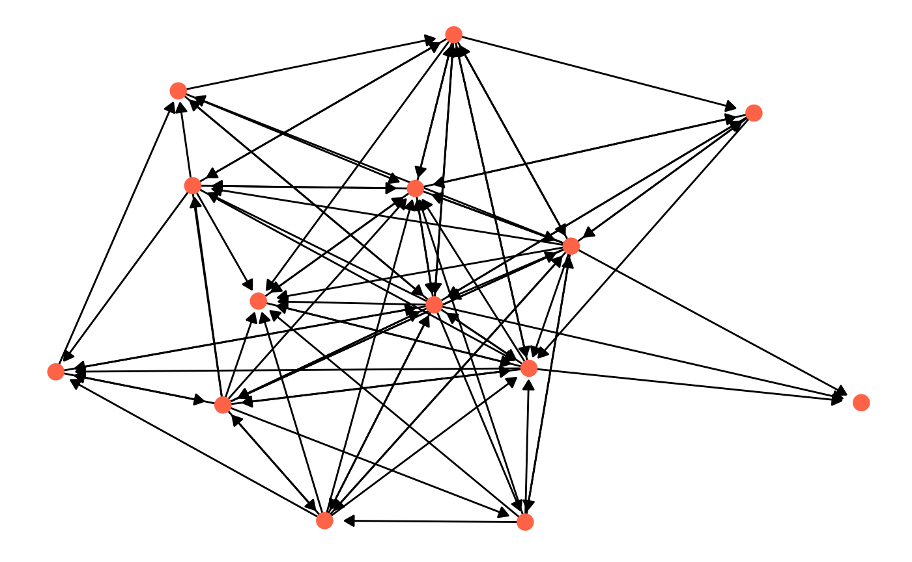
The slightly shortened edges avoid overplotting the edge arrows and the nodes. The amount of “edge shortening” can be set through the arrow.gap parameter of ggnetwork, which defaults to 0 when the network is undirected and 0.025 when it is. This parameter might need adjustment depending on the size of the nodes, and it will probably not manage to avoid any overplotting when the size of the nodes is not constant.
Edge weights
ggnetwork can use an edge attribute as edge weights when computing the network layout. The name of that edge attribute should be passed to the weights argument for that to happen, as in this example, which will produce different layouts than if weights had been left set to NULL (the default):
ggnetwork(emon[[1]], weights = "Frequency")The Kamada-Kawai is one example of a network layout that supports edge weights. The user should refer to the documentation of each network layout to understand which of these can make use of edge weights.
If ggnetwork finds duplicated edges in a network, it will return a warning, as these edges should probably have been converted to single weighted edges for adequate plotting.
Node faceting
In order for ggnetwork to operate correctly with faceted plots, the by argument, which is NULL by default, can be set to the name of an edge attribute. The result will be a longer data frame that can be plotted with either facet_wrap or facet_grid, as in the example below, where the faceting variable, the Frequency edge attribute, has to be specified twice (once to ggnetwork, once to facet_wrap):
ggplot(ggnetwork(emon[[1]], arrow.gap = 0.04, by = "Frequency"),
aes(x = x, y = y, xend = xend, yend = yend)) +
geom_edges(arrow = arrow(length = unit(6, "pt"), type = "closed"),
aes(color = Sponsorship)) +
geom_nodes(aes(color = Sponsorship), size = 4) +
facet_wrap(~ Frequency) +
theme_facet()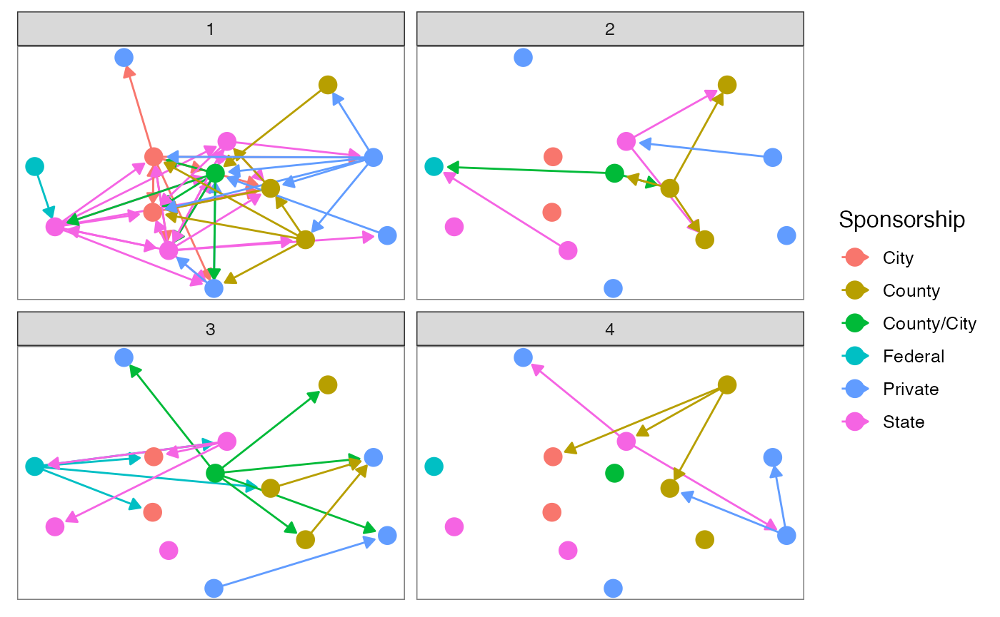
The by argument is basically an attempt to bring minimal support for temporal networks in ggnetwork. It will systematically show all nodes in all plot facets, using the same coordinates in every facet. For more advanced plots of dynamic networks, the user should turn to the ndtv and tsna packages.
The example above also shows how to use a vertex attribute as part of the aesthetics of the edges. Given how ggnetwork operates, these vertex attributes will always be those of the sender node.
Last, the example also shows that ggnetwork comes with a theme called theme_facet. This theme is a variation of the previously mentioned theme_blank that preserves its facet boxes:
theme_facet## function (base_size = 12, base_family = "", ...)
## {
## theme_blank(base_size = base_size, base_family = base_family) +
## ggplot2::theme(panel.border = ggplot2::element_rect(fill = NA,
## color = "grey50"), ...)
## }
## <bytecode: 0x7fabe2bccc40>
## <environment: namespace:ggnetwork>Additional methods
Since ggnetwork works entirely through ggplot2, all ggplot2 methods apply:
ggplot(n, aes(x = x, y = y, xend = xend, yend = yend)) +
geom_edges(aes(linetype = type), color = "grey50") +
geom_nodes(aes(x, y, color = family, size = 1.5 * importance)) +
geom_nodetext(aes(label = LETTERS[ vertex.names ], size = 0.5 * importance)) +
geom_edgetext(aes(label = day), color = "grey25") +
scale_color_brewer(palette = "Set2") +
scale_size_area("importance", breaks = 1:3, max_size = 9) +
theme_blank()
Similarly, it is possible to use any of the geometries more than once per plot:
ggplot(n, aes(x = x, y = y, xend = xend, yend = yend)) +
geom_edges(color = "grey50", alpha = 0.5) +
geom_nodes(aes(x, y, color = family, size = 5.5 * importance), alpha = 0.5) +
geom_nodes(aes(x, y, color = family, size = 1.5 * importance)) +
scale_color_brewer(palette = "Set1") +
guides(size = FALSE) +
theme_blank()## Warning: The `<scale>` argument of `guides()` cannot be `FALSE`. Use "none" instead as
## of ggplot2 3.3.4.
## This warning is displayed once every 8 hours.
## Call `lifecycle::last_lifecycle_warnings()` to see where this warning was
## generated.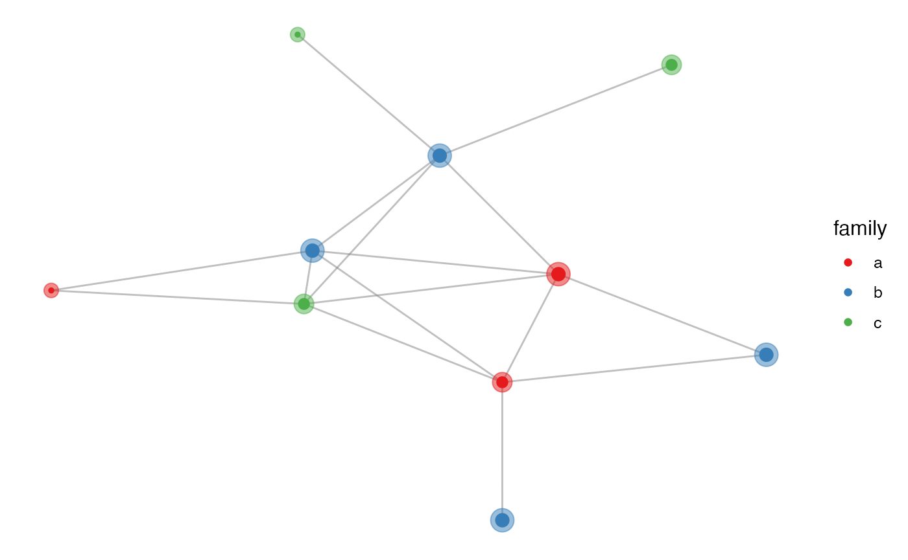
Last, all geoms provided by ggnetwork can be subsetted through the data argument, just as any ggplot2 geom, and as in the example below, which draws only a subset of all node labels:
ggplot(n, aes(x = x, y = y, xend = xend, yend = yend)) +
geom_edges(color = "grey50", alpha = 0.5) +
geom_nodes(aes(x, y, color = family), size = 3) +
geom_nodelabel_repel(aes(label = vertex.names),
box.padding = unit(1, "lines"),
data = function(x) { x[ x$family == "a", ]}) +
scale_color_brewer(palette = "Set1") +
theme_blank()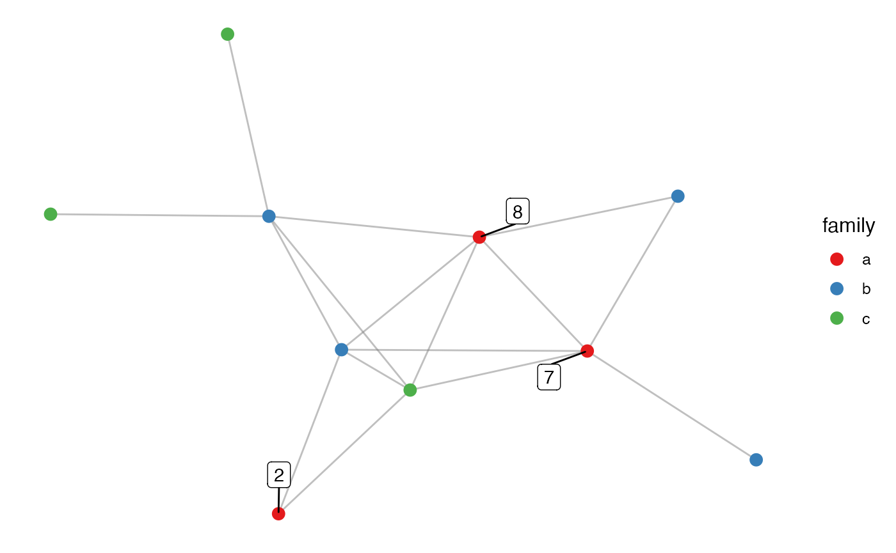
Last printed on Feb 14, 2024, using ggnetwork version 0.5.13.